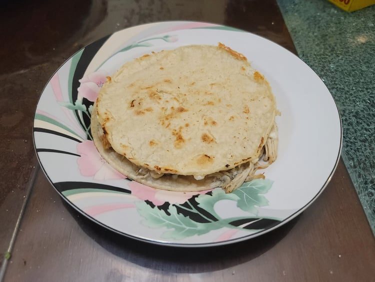

Quesadilla

Ingredients:
- 2 Tortillas, corn for Mexican, flour for Tex-mex
- Cheese, Oaxaca for Mexican, Mexican blend or other for Tex-mex
- Optional: Taco meat or Cooked shredded chicken
- Oil
Instructions:
- Heat a small amount of oil on a pan over medium heat.
- Place a tortilla onto the pan. Then place half of the cheese, any desired filling, the rest of the cheese, and then the other tortilla. Brush the top tortilla with a little oil.
- When the bottom tortilla becomes crispy, flip and cook the other side. Cook until crispy and serve hot.